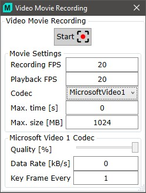

|
Video Movie Recording
|

开始
让您选择文件名并开始电影录制。
电影设置
录制 FPS
您可以在此输入所需的录制帧率。由于相机规格限制，实际帧率可能有所不同。
播放 FPS
您可以在此输入所需的播放帧率。通过设置较低/较高的播放帧率，可以实现慢速或快速运动效果。
编码器
您可以在此选择 AVI 编码器：
最大时间
设置视频录制的最长时间。到达此时间后录制将自动停止。
最大大小
设置视频文件的最大文件大小。如果文件超过最大大小，录制将自动停止。
Microsoft 视频 1 编码器
质量
设置保存的视频图像质量。质量越低，文件大小越小。
数据速率
所需的数据速率。数据速率为 0 时使用自动数据速率。
关键帧间隔
定义关键帧的数量。